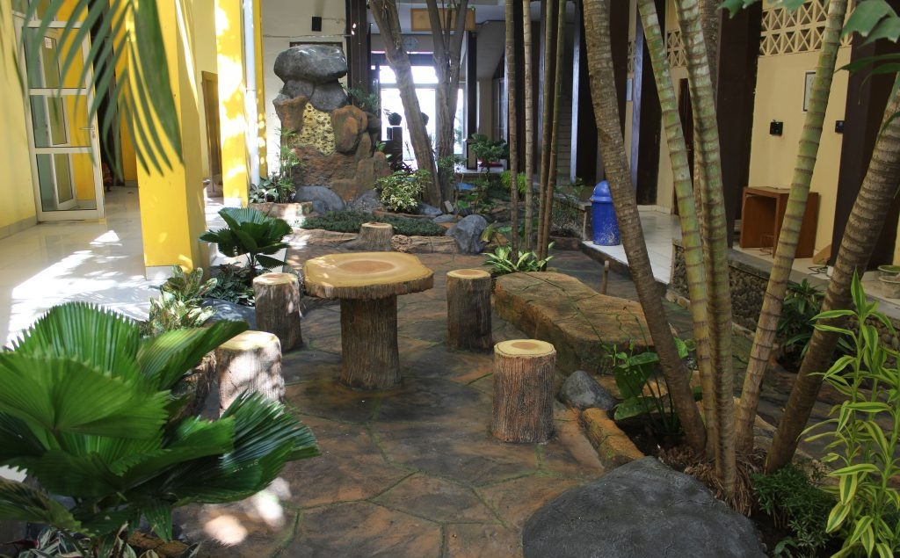

Sejarah Singkat
Pelaksanaannya melalui Praktek Kerja Industri (Prakerin) yang mulai diberlakukan pada siswa tingkat I semester II sebagai masa orientasi kerja/pengenalan kerja dengan jangkawaktu 1 bulan dan tingkat II semester V selama 2 bulan sebagai masa pelatihan kerja dengan dibantu pembimbing di Dunia Usaha/Dunia Industri (DU/DI), masa kerja dengan bimbingan guru dan DU/DI, dengan persiapan tugas akhir sebagai syarat mengikuti Uji Kompetensi oleh LSP (Lembaga Sertifikasi Profesi).
Saat ini SMK Negeri 8 Semarang mempunyai empat jurusan yaitu Pekerjaan Sosial (Peksos), Rekayasa Perangkat Lunak (RPL), Multimedia (MM) dan Teknik Komputer dan Jaringan (TKJ). Pada Penerimaan Peserta Didik (PPD) tahun 2015, SMKN 8 Semerang membukukan catatan baik. Pendaftar mencapai 1.744 orang. Padahal kuota yang disediakan untuk siswa baru hanya 391 kursi.
Siswa SMKN 8 Semarang juga aktif mengikuti berbagai lomba. Catatan menunjukkan, selama bulan Mei 2014 saja, ada tiga trofi bergengsi yang bisa diboyong ke sekolah. Prestasi siswaSMKN 8 Semarang di antaranya, juara I lomba Fotografi Fasilkom Week Udinus atas nama Prista Inu Kinanti, kelas X Multimedia 1. Risal Fajar meraih juara III pada ajang yang sama. Kemudian juara I lomba fotografi Yamaha Kompas Youth Futsal Walikota Cup 2014 atas nama Chandra Suhada siswa kelas X Multimedia 2.
SMKN 8 Semarang memang tengah mempersiapkan diri menjadi pusat layanan IT di Kota Semarang. Tak hanya para siswa yang membuat kegiatan pengabdian melalui tugas projek. Para guru juga sering membuat kegiatan pelatihan bersama Musyawarah Guru Mata Pelajaran (MGMP) di tingkat Jawa Tengah.
© mayzldaa. All Rights Reserved.